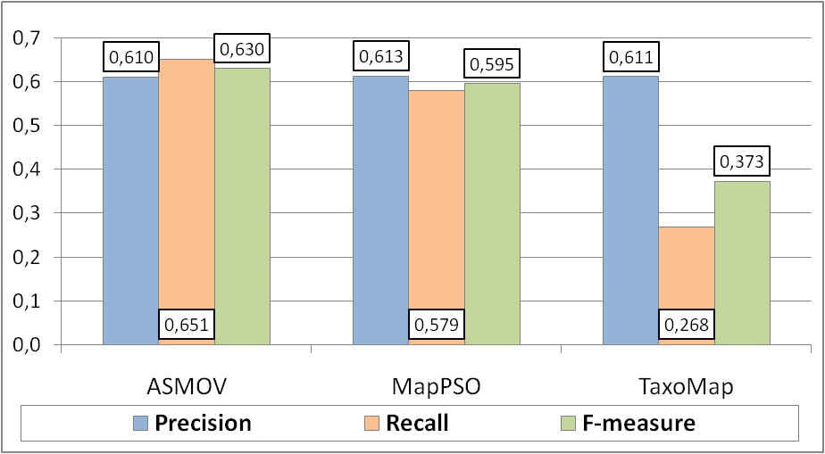
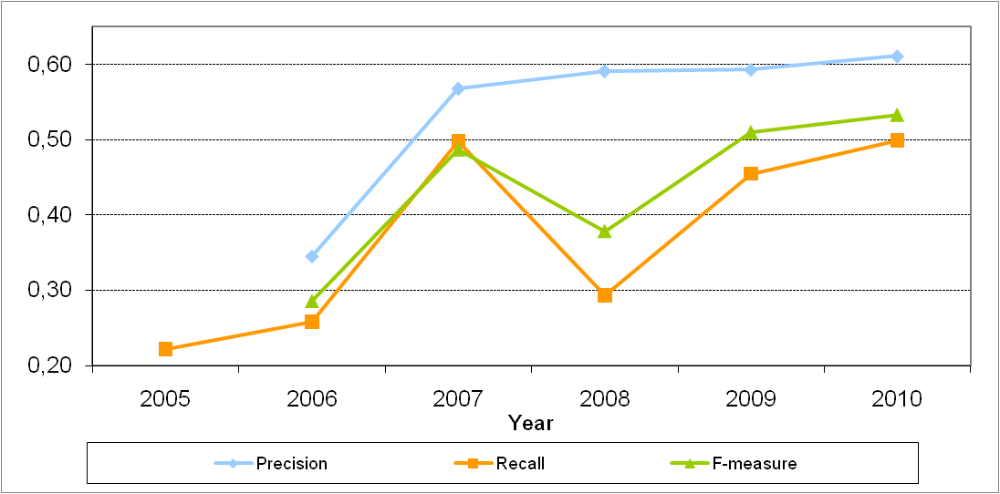
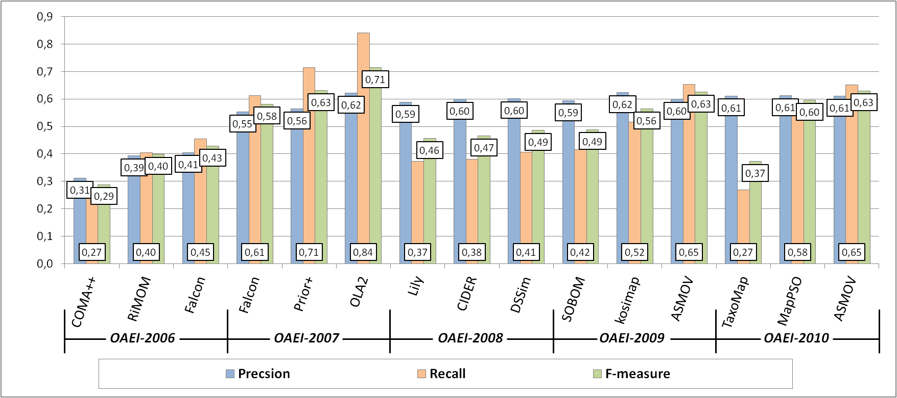
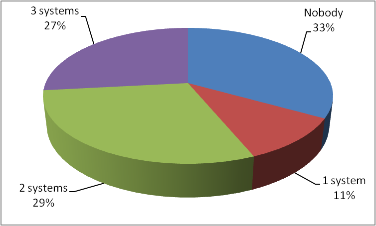
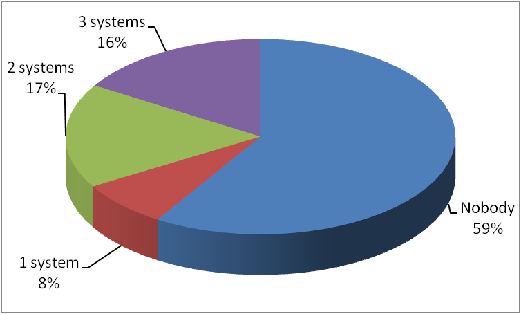

This test case aims at providing a challenging task for ontology matching systems in the domain of large directories. The test case set up is provided here.
In OAEI-2010, 3 out of 15 matching systems participated on the web directories test case, while in OAEI-2009, 7 out of 15, while in OAEI-2008, 7 out of 13, in OAEI-2007, 9 out of 18, in OAEI-2006, 7 out of 10, and in OAEI-2005, 7 out of 7 did it.
Precision, Recall and F-measure results of the systems on the web directories test case are shown in Figure 1. These indicators have been computed following the TaxMe2 methodology, with the help of Alignment API, version 4.0.

Figure 1. Matching quality results.
We can observe from that ASMOV has maintained its recall, but increased its precision by 1 point in comparison to 2009. MapPSO has increased its recall (+27) and precision (+7) values, resulting in a 20 points increase in the F-measure from its last participation in 2008. TaxoMap has decreased its recall (-7) but increased its precision (+3), resulting in an overall decrease of F-measure (-6) from its last participation in 2009. ASMOV is the system with the highest F-measure value in 2010.
In total 24 matching systems have participated during the 6 years (2005 - 2010) of the OAEI campaign in the directory track where 40 individual submissions have been received over the past 6 years. No single system has participated in all campaigns involving the web directory dataset (2005 - 2010). A total of 15 systems have participated only one time in the evaluation, 5 systems have participated 3 times (DSSIM, Falcon, Lily, RiMOM and TaxoMap), and only 1 system has participated 4 times (ASMOV).
As can be seen in Figure 2, this year there is an small increase (2%) in the average precision, in comparison to 2007 and 2008. The average recall in 2010 increased in comparison to 2009, reaching the same highest average recall value as in 2007. Considering F-measure, results for 2010 show the highest average in the 5 years (2006 to 2010). Notice that in 2005 the data set allowed only the estimation of recall, therefore Figure 2 and Table 1 do not contain values of precision and F-measure for 2005.

Figure 2. Average results by year.
A comparison of the results in 2006 - 2010 for the top-3 systems of each year based on the highest values of the F-measure indicator is shown in Figure 3. An important note is that since there are only 3 participants this year, they all made their ways into the top three. The comparison of the top three participants has being made since 2006, therefore we keep the same comparison (and not the top 2, for example) for historical reasons.
The quality of the best F-measure result of 2010 (0.63) achieved by ASMOV is equal to the best F-measure of 2009 by the same systems, and higher than the best F-measure of 2007 by DSSim (0.49) and than that of 2006 by Falcon (0.43), but still lower than the best F-measure of 2007 (0.71) by OLA2. All three participating systems have achieved the same precision in 2010 (0.61), but this precision is lower than the best values of 2009 (0.62) by kosimap, of 2008 (0.64) by ASMOV and of 2007 by both OLA2 and X-SOM. Finally, for what concerns recall, the best result of 2010 achieved by ASMOV (0.65) is equal to the best value of 2009 (0.65) also achieved by ASMOV, and higher than the best value of 2008 (0.41) demonstrated by DSSim and the best value in 2006 (0.45) by Falcon, but still lower than the best result obtained in 2007 (0.84) obtained by OLA2.

Figure 3. Comparison of matching quality results in 2006 - 2010.
Partitions of positive and negative correspondences, according to the system results, are presented in Figure 4 and Figure 5, respectively. Figure 4 shows that the systems managed to discover only 67% of the total number of positive correspondences (Nobody = 33%). Only 27% of positive correspondences were found by all three participating systems. The percentage of positive correspondences found by the systems this year is slightly lower than the values of 2009, when 68% of the positive correspondences where found, but still higher than the values of 2008, when 54% of the positive correspondences where found.

Figure 4. Partition of the system results on positive correspondences.

Figure 5. Partition of the system results on negative correspondences.
Figure 5 shows that more than half (59%) of the negatives correspondences were not found by the systems (correctly) in comparison to 56% not found in 2009). Figure 5 also shows that all participating systems found 16% of the negative correspondences, i.e., mistakenly returned them as positive, in comparison to 17% in 2009. These two observations explain the small increase in precision in Figure 2. The last two observations also suggest that the discrimination ability of the dataset remains as high as in previous years.
Figure 4 shows that 33% of positive correspondences have not been found by any of the matching systems this year. This value is better that the values of 2006 (43%) and 2008 (46%) but worse than 2009 (32%). In 2007 all the positive correspondences have been collectively found; these results (2007) were exceptional because the participating systems altogether had a full coverage of the expected results and very high precision and recall. Unfortunately, the best systems of 2007 did not participate this year (nor in 2008 and 2009) and the other systems do not seem to cope with the results of 2007.
Figure 5 shows that this year 59% of the negatives correspondences were correctly not found. There is an increase in comparison to the value of 2009 (56%) but a decrease in comparison to the value of 2008, when 66% of the negatives correspondences where not found, being the best value in all years (2006 to 2010). This year 16% of the negative correspondences were mistakenly found by all the (3) participating systems, being the best value that of 2008 (1% for all (7) participating systems). An interpretation of these observations could be that the set of participating systems in 2010 seem to have found a good balance between being "cautious" (not finding negatives) and being "brave" (finding positives), resulting in average increases on precision, recall and F-measure as shown in Figure 2. In average, in 2010 the participants have a more "cautious" strategy of all years except 2008, being a little bit more "brave" than in 2007 and 2008. In 2007, we can observe that the set systems showed the most "brave" strategy in discovering correspondences of all the yearly evaluation initiatives, when the set of positive correspondences was fully covered, but covering mistakenly also 98% of the negative correspondences.
This year the average performance of the participants on the small stasks (given by the increase in precision and F-measure in Figure 2) is the best of all 5 years (2006 to 2010). This suggests that the set of participating systems have found a balance between a "brave and cautious" behavior for discovering correspondences. However, the value for the F-measure (0.53) indicates that there is still room for further improvements. In comparison to 2009, there is an increase of 2% in F-measure where the average F-measure was (0.51). Finally, as partitions of positive and negative correspondences indicate (see Figure 4 and Figure 5), the dataset still retains a good discrimination ability, i.e., different sets of correspondences are still hard for the different systems.
The systems that submitted their results to the Single task modality of the Directory track were ASMOV, GeRoMe-SMB, MapPSO and TaxoMap, though the Single task modality in the Directory was canceled due to lack of resources needed to cross check the reference alignments.